S7-1200 CPU V2.1 版本开始支持分布式 IO 设备的诊断功能，可使用 DeviceStates 和 ModuleStates 指令对分布式 IO 设备的站状态和子模块进行诊断。
S7-1200 CPU V4.0 版本开始支持做为智能设备与其它控制器通信，可使用 ModuleStates 指令诊断智能设备的通信状态。
本部分使用 CPU 1214C V4.4 和 ET200SP 的 PN 通信为例进行说明（DP通信同样适用）。
硬件：
软件：
使用 TIA Portal 创建一个新项目，正确配置，下载后，进入网络视图，所有站点状态正常。如图 1 所示。
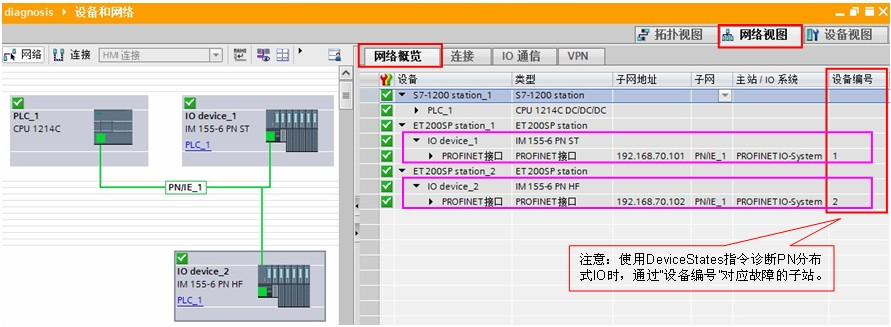
图 1 网络视图
注意：分布式 IO 为 PN 子站时，可在“网络概览”中可以查看分布式 IO 的设备编号。
在全局数据块中创建数据类型为 Array of BOOL 数组，共计1024个元素，如图 2 所示。
『注意』对于DP主站系统，相关的诊断功能与PROFINET系统类似。只是需要使用DP系统兼容的变量，例如创建128个元素的 Array of BOOL 数组，用于存储DP站的状态，类似情况下文不再赘述。
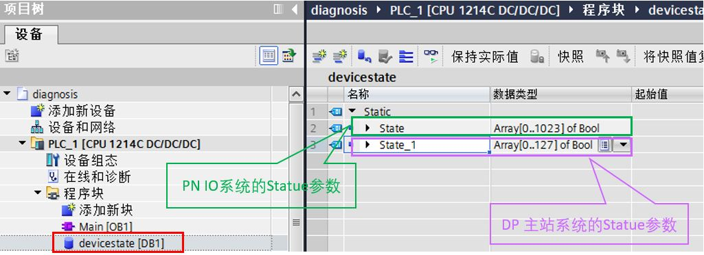
图 2 创建全局数据块
在 OB1 中调用 DeviceStates 指令，双击 LADDR 引脚，选择需要诊断的 IO 系统，如图 3 所示。
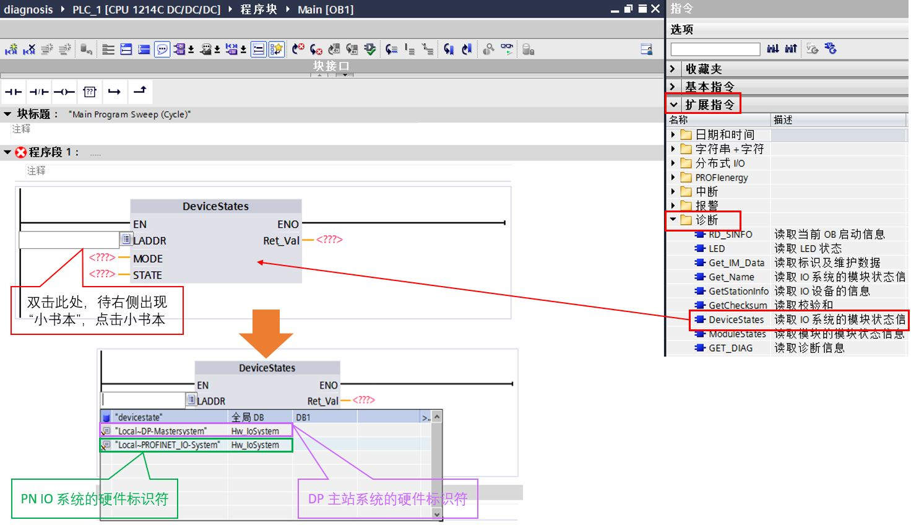
图 3 调用 DeviceStates 指令
本例中选择PN IO系统硬件标识符，并将 MODE 设置为2，STATE 填写上述定义的全局数据块数组。如图 4 所示。
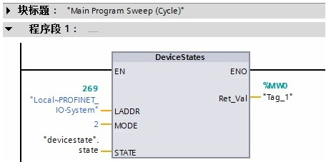
图 4 填写相应的引脚
表 1 DeviceStates 指令引脚说明
| 参数 LADDR | 使用 LADDR 参数通过硬件标识符选择 PROFINET IO 或 DP 主站系统。 硬件标识符位于：
|
| 参数 MODE | 使用 MODE 参数可读取状态信息。 可读取整个 PROFINET IO 或 DP 主站系统的下列一条状态信息：
|
| 参数 STATE | 通过 STATE 参数，输出由 MODE 参数选择的 IO 设备/DP 从站的状态。 如果使用 MODE 选择的状态适用于 IO 设备/DP 从站，则在 STATE 参数中将下列位设置为“1”：
使用“BOOL”或“Array of BOOL”作为数据类型：
|
将程序下载到 PLC 中。
监控全局数据块 devicestate。如图 5 所示。
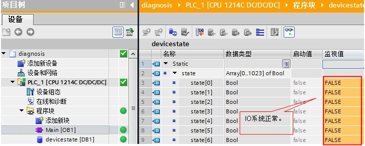
图 5 IO 系统正常
当 IO device_2 故障时（掉电或网线拔除导致丢站），state[2]=1。如图 6 所示。
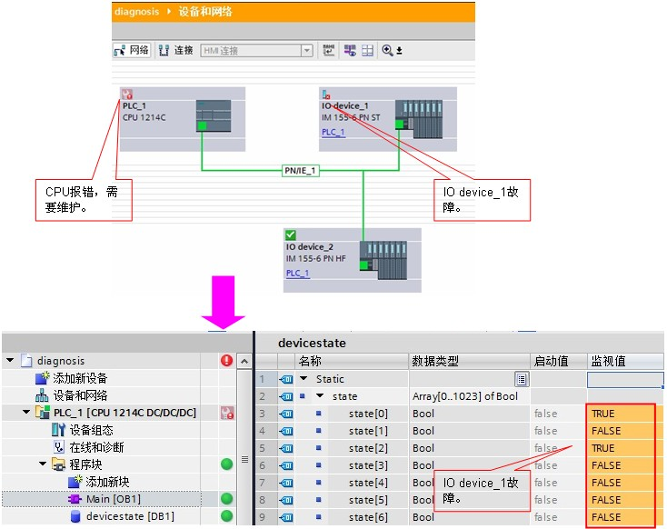
图 6 IO device_2 故障
当 IO device_1 和 IO device_2 故障时（掉电或网线拔除导致丢站），state[1]=1 和 state[2]=1。如图 7 所示。
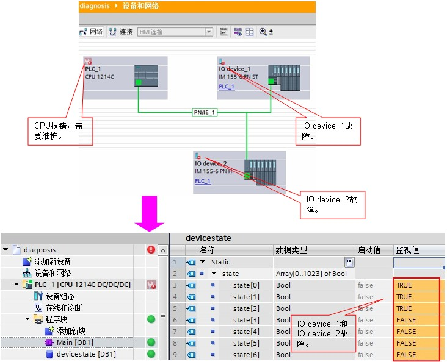
图 7 IO device_1 和 IO device_2 故障
在全局数据块中创建数据类型为 Array of BOOL 数组，共计128个元素。 如图 8 所示。
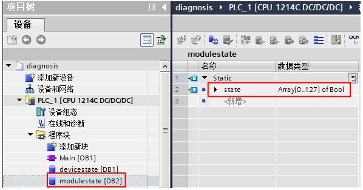
图 8 创建全局数据块
在 OB1 中调用 ModuleStates 指令，双击 LADDR 引脚，选择需要诊断的分布式 IO 站。如图 9 所示。
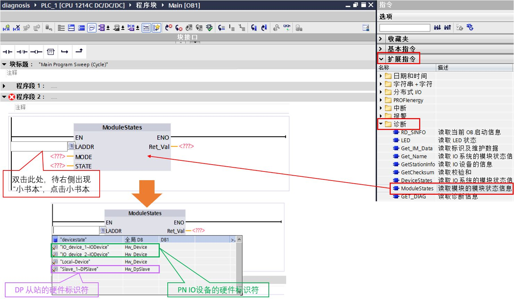
图 9 调用 ModuleStates 指令
本例中选择PN IO设备硬件标识符，并将 MODE 设置为2，STATE 填写上述定义的全局数据块数组。如图 10 所示。
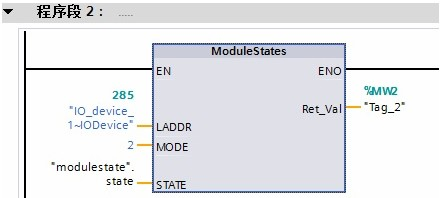
图 10 填写相应的引脚
表 2 ModuleStates指令引脚说明
| 参数 LADDR | 使用 LADDR 参数通过站硬件标识符选择 IO 设备或 DP 从站。
|
| 参数 MODE | 使用 MODE 参数可读取状态信息。 可读取模块的下列一条状态信息：
|
| 参数 STATE | STATE 参数输出使用 MODE 参数选择的模块状态。
使用“BOOL”或“Array of BOOL”作为数据类型：
|
将程序下载到 PLC 中。
监控全局数据块 modulestate。如图 11 所示。
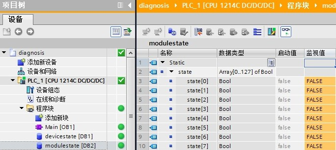
图 11 分布式 IO 站所有子模块正常
当 IO device_1 站插槽编号1的子模块故障时（损坏或被拔除），state[2]=1。如图 12 所示。
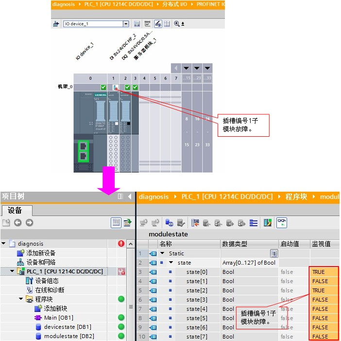
图 12 插槽编号1子模块故障
本部分使用 CPU 1215FC V4.4 （智能设备）和 CPU 1217C V4.5 （IO 控制器）PN 通信为例进行说明
硬件：
软件：
CPU 1215FC 做为智能设备，连接到 IO 控制器 CPU 1217C，如图 13 所示。
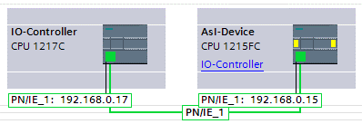
图 13 组态概览
本示例中，CPU 1215FC 配置了两个传输区，如图 14 所示。
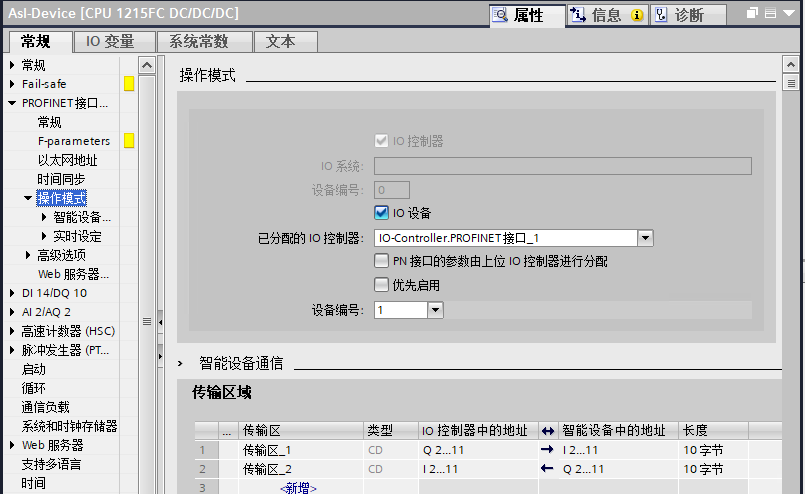
图 14 智能设备设置
可以使用 ModuleStates 指令，确认智能设备的连接状态，功能块位于“扩展指令-诊断”中，如图 15 所示。
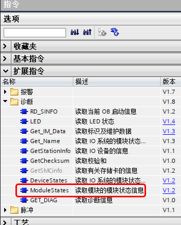
图 15 ModuleStates 指令位置
数据类型为 Bool 数组 (Array[0..127] of Bool) ，如图 16 所示：
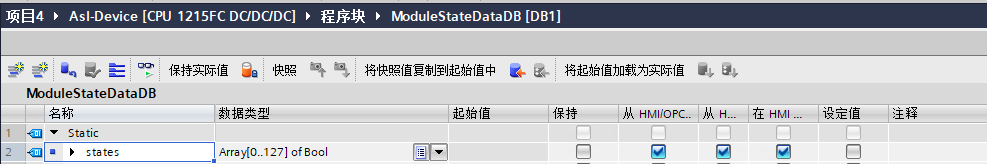
图 16 用于接收状态的 DB 变量
指令在OB1中调用，其中 LADDR 使用的系统常数，如图 17 所示。
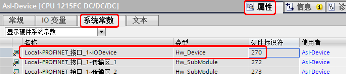
图 17 硬件标识符
程序中，STATE 使用图 16 创建的数组，MODE 设置为 2，调用如图 18 所示。
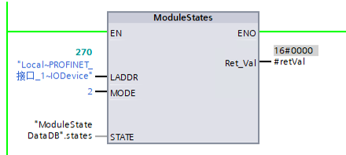
图 18 调用指令
指令管脚说明参见表 2。
当智能设备与 IO 控制器网络断开以后，如图 19 所示。
图 19 断开网络
从智能设备的接收状态 DB 中读取到状态位 0 以及状态位 2 均为"TRUE"，说明与 IO 控制器的通信中断，如图 20 所示。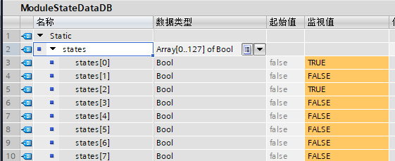
图 20 读取到的状态